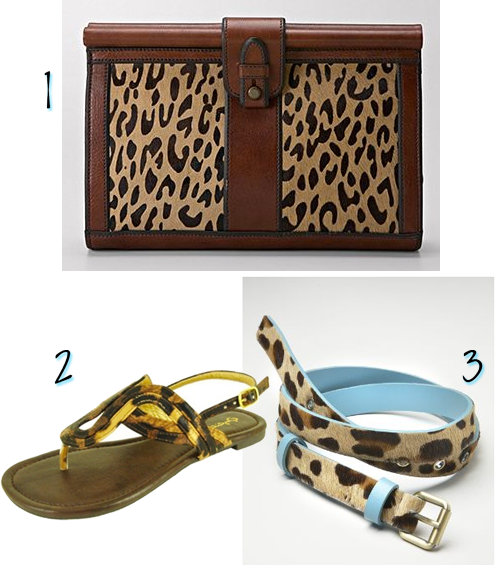

Mini Boden has some of the cutest boy stuff for fall and winter and I’m definitely a sucker for stripes, which seems to be their specialty!!
Wild Thang
August 2, 2011 by
Ever since I saw this outfit on Pinterest, I have been feeling the need to throw some sort of animal print accessory into the mix. These are a few things I came up with.

- Vintage Re-Issue Clutch, Fossil
- Leopard Horseshoe Sandal, ebay
- Skinny Belt, Boden
You’re a Firework!
July 4, 2011 by

Happy 4th y’all! Here’s a little red, white, and blue for you today!
- Gypsy Top, Boden
- Hammock Red Jelly Sandals, Top Shop
- The Diva Clean Front Denim Bermudas, Old Navy
- Crochet Trim Top, Old Navy
- Bow-Tied Slides, Anthropologie
- Red Stripe Sun Top, Top Shop
- A-line Racerback Tank, Garnet Hill
- Heaven’s Gate Earrings, Sundance Catalog
- Poesy Toesy Sandals, Sundance Catalog
- Silk Painterly Top, Boden
Don’t Get Pinched This Year
March 15, 2011 by

We all know St. Patrick’s Day is coming up later this week. And if you didn’t, now you do. I thought I would give you ladies a few options to wear so you don’t get pinched while out enjoying a green beer (or two…or three..) Slainte!!
- Forever 21, Geometric Bow Waist Dress
- Amazon, OPI Green-Wich Village Nail Color
- Modcloth, Link Happy Thoughts Sandal
- DSW, Coconuts Mena Wedge Sandal
- Target, Twisted Seed Beaded Necklace
- The Limited, Ruffle Front Top
- The Limited, Green Striped Strapless Dress
- Target, Merona Tahira Sleeveless Top
- Boden, Ruffled Ribbon Necklace
- The Limited, Wow Ruffle Shirt
Latest Loves
March 1, 2011 by

These are the latest things I’ve been crushing on lately. What are you crushing on lately?
- Elastic Espadrilles, Boden-I could not love this color more. The price on the other hand, I could do without that.
- Jewelled Button Cardigan, Boden-I love me a good cardigan and this just snazzes things up a bit.
- Sky Drops Earrings, Anthropologie-I helped throw a baby shower over the weekend and this was the hostess gift I got. I am in absolute love with these earrings.
- Coptic Cross Bracelet, Sundance Catalog-I saw a bracelet similar to this on the BonBon Rose Girls site and have yet to stop thinking about it. This is the closest I’ve come to finding something like it.
- Mossimo Ownah Striped Espadrilles, Target-I actually purchased these since it’s already getting summer-like here . I plan on wearing the hell out of them this spring/summer.
I’ve Been Workin on the Railroad
February 3, 2011 by

I have a thing for “railroad” denim. It may have a technical name, but that I do not know. I love it nonetheless. I love that it goes with all colors and just adds a touch of uniqueness to your average ole jeans. I think I need one of each of these suckers. (OMG BABY RAILROADS!!!)
- Old Navy, Striped Denim Shorts for Baby
- Kohls, Railroad Pull On Denim Shorts– UM railroad jegging shorts. wow.
- Forever21, Flared Sailing Jeans
- Gap, Patchwork Roll Up Denim
- Boden, Baby Jeans
Boden Mamas
January 31, 2011 by
So I heard about the new Boden Maternity line last week and did a little jump for joy. (you know because I’m in the growing a child kinda of way right now) I can’t get enough of a Boden catalog when it comes in the mail due to all the colors and color combos and oh my it’s just pure joy. So when I heard about them having a maternity line now I seriously, I shit you not, did a little dance. Check out the cuteness for yourself.
Boden Maternity, Boden
I Love Stripes!
January 27, 2011 by

I have a love for stripes and tend to buy my son stripes as well. These are definitely ones I would love to add to his collection. Are you a stripes lover?
- The T-Shirt, Boden
- Short Sleeved Stripe Pocket T, Gap
- Boys’ ruler-stripe slub popover hoodie, J.Crew
- Mariner Hoodie, Hanna Andersson
- Polos for Baby, Old Navy
- Crew Neck Tees for Baby, Old Navy
- Bold Stripe Tee, Hanna Andersson
Christmas Duds
December 21, 2010 by

So if I had planned a bit better this is what my little guy might be wearing on Christmas Day come dinner time. I’d also be crossing my fingers that the temp might be on the cold side and he wouldn’t overheat.
- Fair Isle Sweater, The Children’s Place
- Holiday Plaid Shirt, Gap
- Baby Jeans, Boden
- Triple Roll Socks, Gap
- School Issue Scholar, Zappos
The One with the Yeti
November 23, 2010 by
Remember the Friends episode where Rachel and Monica bug bomb the neighbor because they thought he was a yeti? Good God do I love me some Friends…I need to start re-watching that series all over again. So anyway, back to yetis..I’ve been seeing them in the stores lately while searching out some winter wear for my little guy and I just think they are adorable! I mean it’s not your typical holiday t-shirt, it’s a YETI, it’s an ABOMINABLE SNOWMAN!
- Hanna Andersson, Cryptid Tee
- Boden, Comic T-Shirt
Bonus question! Name the actor who does the voice of the Abominable Snowman in Monsters, Inc. GO!


{kind=link}
Recent Comments